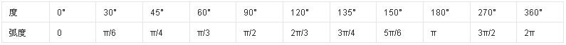
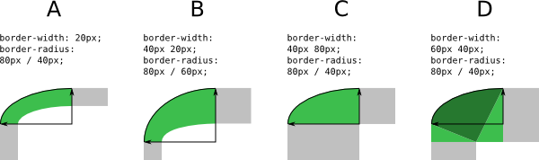
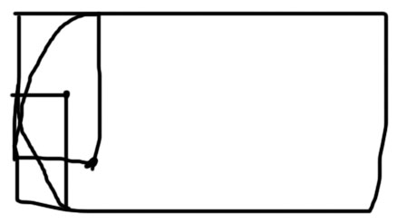

简写属性border
border:border-width line-style color
border-color
初始值：当前color的颜色
应用于：所有元素
继承：无
动画：有
在不设边框样色的情况下，默认为字体颜色，凹凸线的颜色会根据字体颜色来变换他的明度或者说是纯度。
默认为字体颜色
边框颜色可以设通明
鼠标经过改变边框颜色。
border-style
取值：line-style
初始值：none
应用于：所有元素
继承：无
动画：无
none hidden dotted dashed solid double groove ridge inset outset
hidden与none相同。不过应用于表时除外，对于表，hidden 用于解决边框冲突。
直线的虚线之间的比例距离也会随着宽度而改变。firefox和chrome之间样式存在差异
原点的虚线之间的比例距离也会随着宽度而改变。firefox和chrome之间样式存在差异
双线之间的比例距离也会随着宽度而改变。
凹槽线，凹线，凸线，凸槽线，可以看到虽然定义了一样的边框颜色但是现实出来的确不一样，他自行改变了颜色的纯度或者说是明度，来产生立体的效果。
凹槽线之间的比例距离也会随着宽度而改变。
凹线
凸线
凸槽线之间的比例距离也会随着宽度而改变。
实线，边框当边距用
可以给边框定义多个样式
border-width
初始值：medium
应用于：所有元素
继承：无
动画：有
简写属性border-radius
简写的时候水平垂直半径用斜杠分开，单个属性的时候用空格分开。
没有边框照样作用于背景。
值定义一个四分之一椭圆的半径



百分比是整个元素的高度和宽度，包括边框的宽高在内，水平值代表宽度，垂直值代表高度。

当角与角之间四分之一圆有交集的时候，交集的几个角会乘以0.8来达到交集角之间的适合平衡。
border-radius:5px 40px 60px;4个参数和margin，padding一样，左上等于上，右上等于右，右下等于下，左下等于左。
border-radius提供2个参数，2个参数以“/”分隔，每个参数允许设置1~4个参数值，第1个参数表示水平半径，第2个参数表示垂直半径，如第2个参数省略，则默认等于第1个参数。
边框里面那条边的圆角是设的边框圆角减去边框的宽度得出的，当2条边宽度不一样的时候使用圆角，很产生粗细线边框之间圆滑的过度。当边框的线样式设的不是solid的话，每种都有奇妙的变化。
border-image
border-image-source
border-image-slice
border-image-width
border-image-outset
border-image-repeat
元素控制属性
能当边距用
box-shadow
初始值：none
应用于：所有元素
继承：无
动画：有（除了内、外阴影切换时）
box-shadow:inset x y 模糊 扩展 颜色
除了x，y其他都可以是缺省值，颜色缺省为字体颜色。
border-radius会影响阴影的形状。
扩展的取值和圆角一起用的时候要注意了，扩展会按比例的放大或是缩小圆角，这里可以看到，阴影只遮阴影和背景不遮内容